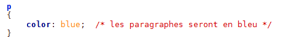
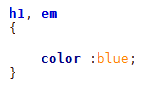
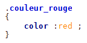
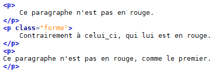
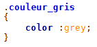
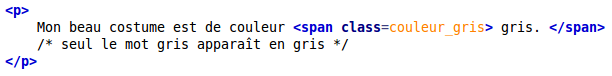

Appliquer un style
Appliquer un style à une balise
Il faut indiquer la balise à traiter (ici : p) des propriétés CSS (ici : color) associées à leur valeur (ici : blue)
Code : CSS

Les caractères /* et */ encadrent le commentaire « les paragraphes seront en bleu ». On peut appliquer les mêmes propriétés à plusieurs balises.
Code : CSS

L'attribut class
L'attribut Class permet de définir une forme pour une portion de texte.
Code : CSS

Code : HTML

Les balises universelles
Elles permettent d'encadrer des mots qui ne sont pas encadrés par une balise.
Les balises <span> et </span>
Ce sont des balises de type inline, c'est-à-dire des balises que l'on place au sein d'un paragraphe de texte, pour sélectionner certains mots uniquement. Les balises <strong> et <em> sont de la même famille. Cette balise s'utilise donc au milieu d'un paragraphe.
Code : CSS

Code : HTML

les balises <div> </div>
Ce sont des balises de type block, qui entourent un bloc de texte. Les balises <p>, <h1>, etc. sont de la même famille. Ces balises ont quelque chose en commun : elles créent un nouveau « bloc » dans la page et provoquent donc obligatoirement un retour à la ligne. <div> est une balise fréquemment utilisée dans la construction d'un design.
Régi par la licence Creative Commons Attribution Non-commercial Share Alike 3.0 License